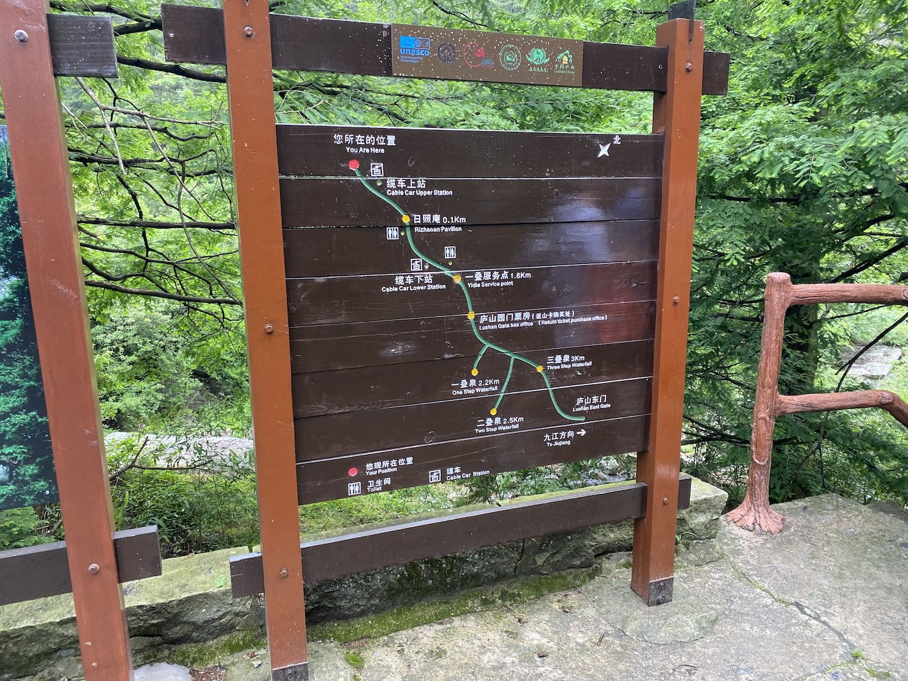

不算好的一年 …
工作
2023 年是我工作的 0.5 年 - 1.5 年，目前对组里负责的已有业务都算是比较熟悉了，值周时也能独立应付大部分问题。这一年由于组里开始负责北京大搜离线的一部分业务，工作量陡然升高，和隔壁的在线组和策略组形成了鲜明的对比，工作强度感觉甚至大于北京的离线组。
纳海 trace 建设
今年年初做的第一个项目就是和接手的北京大搜那边的垂类业务有关。对于搜索离线，架构需要做的本质上就是对数据进行处理，无论是通过离线还是流式的方式，对输入的数据进行计算加工，最后将结果存储到对应的介质中。处理大搜离线数据的项目代号叫纳海，是 21 年左右北京的同事搞的，但是现在转组的转组，离职的离职，并且这个项目做的还缺胳膊少腿的，相当于是我们这儿接手了一个半成品，需要对其进行完善，否则基本不可维护。我分到的工作是给数据计算模块，简称计算系统，自动添加 trace。
纳海计算系统的部署方式是一个垂类或多个垂类部署一个计算系统，由于涉及到的垂类较多，比如音乐、汉语等，对于 trace 的管理较为分散，需要做一个统一的接入和管理方案。上海搜索离线架构组原来只是负责阿拉丁离线的业务，那一套离线建库系统是独立于大搜那儿的，系统模块间使用 Kafka 进行流式数据传递，而 trace 系统会使用一个独立的 consumer group 消费模块间传输数据的 topic 的数据，对其进行解析后将元数据信息存入 elasticsearch 中建立索引。由于 Kafka 的数据基本设置的是 3 天过期，所以在数据过期之前，查询 trace 时可以根据存储的 partition 和 offset 信息读取原始数据，便于问题排查。
由于同期的另一个项目，纳海监控，就是直接利用已有的自建 Prometheus ，通过编写 Exporter 的方式采集计算系统的监控数据，所以一开始定的项目设计的大方向也是想利用已有的 trace 来做，但是后续在设计的过程中发现其实是不可行的。首先，新接手的离线系统涉及到的模块并不是很多，只有数据引入模块、计算系统模块、策略计算模块和正排计算模块，并且这些模块之间要么是通过公司自研的消息队列 bigpipe 通信，要么就是通过 rpc 直接通信，如果想基于 Kafka 收集 trace 数据的话，需要额外搭建 Kafka 集群来存原始数据，并且大搜建库的数据量较大，所以成本会提高很多。
另一种方案是直接使用公司内部提供的基于日志的 trace 服务 ftrace，它的成本较低，并且之前部分计算系统已经接入了 ftrace，但是它只能通过 bns 来采集服务对应的实例日志，每接入一个新的服务就需要重新申请一遍，每次大约需要几天的数据，并且由于是垂类的 owner 接入，对于 trace 的管理较为分散。
bns 的全称是 baidu naming service（猜的），类似于是外部的 DNS，公司会在每一台物理机上部署 bns agent 劫持 dns 端口。一个 bns，例如 kafka-cosmos-build.www.yq ，对应一个服务，这个服务下可以挂很多的实例，bns 中记录了这些实例所在机器的 ip、监听端口、运行状态以及部署路径等信息。
是使用自建方案还是 ftrace 方案讨论了很久，设计了好几版方案，但是如果使用自建方案，成本会是 ftrace 方案的五六倍，但是如果使用 ftrace 方案，由于是依赖外部服务，就没办法做到 trace 的自动接入。其实期间也拉了 ftrace 的同学讨论能否给单独开个 api 接口让我们这里自动创建服务，但是他们那儿在 q1 没有人力支持。
由于方案一直定不下来，那时我都非常焦虑，因为方案定不下来就意味着没有进展，那我改在每周的组会上说什么呢？春节假期我也没有额外请假，周六就到公司来想方案了，但是还是摇摆不定。我记得那些天中午我都一个人绕着公司低头溜大圈，上次我这样还是研二开题开不出来的时候。
最终的方案直到 q1 末才定下来，说起来很搞笑的是，一个 bns 的功能就解决了所有的问题，事后我常常想，我才入职半年不知道这个功能应该情有可原，为啥已经入职了五六年的 t5 t7 也不知道这个功能 …. 那是一次跟 ftrace 同学讨论的过程中，他们偶然提到了 bns-group 概念，也即就像可以往 bns 下挂在实例，bns-group 支持向其下挂在 bns！并且 bns-group 的使用方式跟 bns 一致，查询时它会列出挂载到其下的全部 bns 的实例信息。
方案一下子就定下来了，先由我这边创建 bns-group，并用 bns-group 去申请 ftrace 服务，类似于申请一个资源池，之后如果有新的服务接入，只需要我这边更新 bns-group 信息，也就是把新服务对应的 bns 挂在到 bns-group 下即可。有了实现方案，后续的推进一下子就顺利了许多，工作包括但不限于：设计和实现修改 bns-group 的接口服务（对 bns 接口的封装以及服务信息管理）和设计和实现 trace 分账系统（基于 qps 数据和已有的阿拉丁分账系统）。由于部分垂类在进到纳海建库系统之前，数据会先由阿拉丁离线建库系统处理，正好这个系统也是我组服务的，就给他们做了全链路 trace 串联和聚合搜索。
插入一条八卦，北京纳海计算系统负责的垂类其实大部分都是从上海阿拉丁离线所负责的垂类中分出去的，当时因为这事情上研的 t9 和经理专门去北京讨论过这件事，不希望把这些垂类分出去的，北京那边自信满满地说可以做的更好，但是最后还是做成了一堆烂摊子又丢还给了上研。
纳海数据迁移
q1 做的另一件事情是支持纳海垂类数据迁移。这里就需要先介绍一下纳海离线建库系统的数据存储了。历史上由于离线建库使用的多为 kv 存储，但是公司有多套 kv 存储介质，为了屏蔽后端存储的详细信息，所以开发了统一的 udai ，全称是universal data access interface（猜的）。服务在运行时，udai 会根据远程 zk 上存储的字典信息加载不同的 so 来实现数据的存取。在建设纳海时，t9 架构师设计了一个新一代的数据访问接口系统，屏蔽后端存储介质，也即 midgard。不同于古老的 udai 高度依赖 so ，midgard 主要是通过 rpc 来和外部交互，这就意味着你甚至可以用 curl 的方式来获取后端数据，并且他提供了更高级的 scan 、rmw 语义来对数据进行高级的访问和处理。
之前说过，对于离线建库，无非是处理数据后将其存储到特定的介质中，而纳海计算系统就依赖 midgard 来存储数据，背后的主要介质是公司自研列存储系统 table。而对于存储数据时，无非就是将二进制数据写入到 midgard，但是需要明确如果对这个二进制数据进行序列化和反序列化。21 年在建设纳海时，为了快速拿到收益，所以为了简单将所有数据都以字符串的形式存储，不分类型。时间到了 23 年，北京的那帮人又要搞计算系统迁移，将数据从无类型迁移为有类型，而对于有类型的数据，纳海计算系统自定义了一套数据序列化方式，其实就是 c++ 的 reinterpret_cast，对于基础类型强行将其 cast 为 char*，不支持非基础类型。
迁移的方式就是把数据从一个 midgard 系统拷贝到另一个 midgard 系统，期间对数据类型进行转换。由于当时刚接触纳海，整个组的人还是一脸懵逼，北京那边也给不出一个像样的操作文档，最终是由我们这儿的一个同学趟了近一个礼拜的坑整理了一个文档，后续我们这儿都是参考这个文档来做的。我在迁移负责的歌词和歌单垂类时，还遇到了其它的坑，甚至协助修复了数据准换工具的一个 bug。
在此期间接触到了 mr 。如果想实现数据并行处理，我之前只知道在程序中搞并发，但是那种只能在单机跑，如果想多机并行，需要对数据输入进行人工的分片，并且对于程序运行状态的控制就复杂了许多。对于 mr 任务来说，不一定要有 reduce，有些时候使用到 map 可能就够了。在进行 map 前 hadoop 会自动对数据进行分片，然后通过配置的并行度执行 map 脚本，而且在 stream 模块下，hadoop 可以执行任意的 bin，而不是局限于 jar，这大大便利了利用 sh / py 等脚本对数据进行并行处理。
离线阿拉丁数据引入模块建设
我们组原本负责的离线阿拉丁建库中，音乐和影视的产研给架构提了几个需求，基本都是和数据引入模块有关。百度的数据源不止来自于网络爬虫，有一部分资源方会主动将更新的数据推送到搜索离线建库的上游，而进入到离线建库后第一个模块就是数据引入模块，它负责对推送的数据进行鉴权、格式校验、数据格式转换等操作。为了实现削峰，模块在设计时对于数据处理的流程是，在 rpc 收到推送的数据后，会提取推送链接中的 token 进行鉴权，之后会将数据写入到 Kafka 中，模块会启动额外的线程从 Kafka 中消费数据，然后再进行其它操作，不过这个存在的问题是，因为是异步处理，资源方无法实时感知到数据格式校验失败的报错。所以对于影视垂类，由于其推送的数据量并不大，所以我这边对数据引入模块做了改造，支持同步校验，也即不经过 Kafka，在 rpc 接口收到请求后就同步走完全部的数据处理流程。这个改造流程并不复杂，不过我第一次接触到了服务是如何进行部署的，走了一遍公司内部的资源申请审批 + 服务部署流程。
影视的第二个需求是希望数据引入模块可以将数据存一份到公司自研的存储系统 afs （对标 hdfs）上，因为目前离线建库的 trace 存储时间较短，不利于排查几个月之前的数据。afs 由他们提供，我们这边只需要往目标地址写入即可。
由于这个工具需要做的比较通用，所以虽然影视垂类的数据不多，但是有其他垂类推送的数据量极大，例如音乐，并且远端数据写入是极为耗时的操作，所以需要花一些心思想一下如果优化这个流程。
afs 提供的客户端本身是支持异步数据写入的，也即调用 write 接口时，并不会阻塞在这里，但是有一个问题是，一个 afs 文件不支持多 writer 同时写入，否则会出现非预期的问题，在 sdk 层面并没有处理这种情况，需要调用者自行解决。那么如果我有多个实例都想往一个文件中写，那岂不是要加个分布式锁？太麻烦了。当时我对这个问题想了半天，最后是搞了个分片的设计，每个实例写自己单独的分片，例如 instance-name_instance-ip_random-number。虽然 sdk 支持数据的异步写入，但是由于担心还是存在写入瓶颈，对于每个实例我也都加了分片，基本是 5 -10 个分片，写入文件按照小时级别切割，引入模块总共 20 个实例，所以日均产生的原始文件数大约在 2400 - 4800 之间。在自运维的物理机上会额外部署一个程序每天定时 compact 这些原始文件，最终每天每个垂类只会有 24 个文件。由于 afs 只有 c++ 的 sdk，而 compact 程序是用 golang 写的，所以我还额外研究了一下通过 swig 实现 golang 调用 c++ so 的方式，把 afs 的 sdk 编译为 so 来给 golang 调用。
影视还提了一个需求，就是希望以资源方为粒度导出每天数据处理的结果，把推送总量、校验成功率、失败的 logid等信息以邮件的形式发送给对应的资源方以及产研 pm 和 rd。这个功能非常简单，无非就是从 ElasticSearch 里导数据，然后对数据内容加工一下之后发邮件，不过由于我之前并不知道公司提供了邮件发送服务器，对于如何发邮件还研究了半天。一件有意思的事情是，每天自动发送给各个资源方的邮件，被退回的比例越来越大的，有可能是负责人离职了，或者是被资源方公司所使用的邮件系统当成垃圾邮件了，乐。
产研侧负责跟我们对接的 rd 中途换了一个人，大概是在 2 月的时候换的，之前的同学是跟我同期校招进来的，在 2022 年上半年的时候还来找我报过几次 case。我影响中是在今年 1 月的时候还跟我了解试用期的问题，结果在 3 月我再搜那位同学的名字却发现已经离职了。我之前一直以为校招的试用期考核只是走个形式，没想到还真的会有人在试用期结束后就被辞退了，当然，也可能是他因为某些原因主动离职的吧。记得那时看着他灰掉的头像，我愣了好久。
纳海汉语垂类
我接手的第一个纳海垂类是汉语，包含字词、诗词和诗句三个子类目。这个垂类是较为重要的，因为在百度上搜到的那些字的拼音、解释，还是那些诗句的内容，都是这个库里的数据。
接手这个垂类有的第一个业务需求，是策略那儿希望给正排字段中加上 Click Query（简称 cq）字段。大致的方案是先将 cq 的数据写到 udai 字段中，然后通过 midgard 引入到纳海计算系统中，最终将加工后的数据写到正排字段里。这个流程看起来似乎很明确，但是其中有无数的坑，甚至导致最后这个 feature 也没有上线。
之前提到过，midgard 是新一代数据统一访问接口，它不但可以将上文提到的 Table 作为存储后端，还可以将 udai 作为存储后端。对于 kv 存储，在访问数据时是通过 key 来查询 value 的，看似很直观，但是由于这个 key 一般是 url 通过某些 sign 算法生成的，并且一开始没有统一约定好 sign 算法，这就导致策略写入 udai 时 sign key 的算子跟 midgard 读取时 sign key 的算法不一致，读取数据失败。因为这相关模块以及流程不熟悉，光这一个问题就排查了好几天，期间甚至自己单独在本地搭建了 midgard 服务来调试。
纳海计算系统是通过数据驱动，通过 mission + 拓扑对指定数据进行加工计算，多个 mission 会复用同一个算子对不同的数据进行处理。算子和 mission 的信息都需要在灵泉平台上进行注册，然后通过编排服务生成计算系统的更新 cr，但是不幸的是，不但 mission、算子这些概念让人很难懂，灵泉平台和编排系统做的也都是半成品，一堆 tick 逻辑，这就让计算系统迭代的流程难上加难。光是搞懂计算系统的概念我就花了两天的时间，熟悉灵泉平台以及编排流程又花了两天的时间，最后又花了三天的时候验证本次迭代需要用到的算子以及完成在平台上的注册，感觉实在是太费劲了，要知道这个平台原本设计的是给产研策略在迭代时自助使用的，但是现在连架构的同学使用都如此费劲，那就更不用提非架构的同学了。
千辛万苦地搞定了数据引入，又发现数据生效到正排还需要对其它的一些配置文件进行修改，但是我对这个流程一脸懵逼，既没有问题，问相关的同学也都不了解，年初的时候从北京 trans 过来了一位同学，原来是搞大搜主索引的，也搞过一段时间的纳海，纳海计算系统框架的第一版就是她写的，在那位同学的协助下，总算是完成了数据生效（有一天甚至搞到了凌晨快一点）。但是不幸的是，策略反馈从在线侧无法解出这个正排数据。离线侧已经确认数据写入完毕了，所以这块问题我就没有追下去，并且由于时间拖的比较长，当时负责汉语的策略同学在高优搞其他的事情，更加搞笑的是，过了一段时间再联系他发现他也离职了。
我至今都记得当初排期说的是要在1.5周内搞定，各种步骤列出的排期最多不超过两天，最后实际投入的时间超过了一个月，我们组的 t7 还跟我说必须要尽快搞完，否则上面不满意，当时我心里说，没文档没人熟悉，这么多坑都要填，这速度已经不错了，要不你来干？真的无语。
汉语垂类的总数据量不是很多，大约在 350w 左右，存储它的倒排索引容器（简称 bs）有 10 天过期时间，并且总容量只有 400w。它的数据退场机制除了数据自动过期外，当容量满了之后，会按照先进先出的原则过期老数据。汉语垂类的离线通路没有常态流量，为了使数据不过期，需要离线架构侧每周重推全量的数据，刷一遍数据的建库时间，防止其因时间过期而被退场。并且需要注意的是，bs 的容量只有 50w 的 buffer，也就是说只要子类目推送的顺序乱了，就会导致某些垂类的数据被非预期退场。另外汉语垂类的离线建库没有显式删除的步骤，完全依赖在线词典屏蔽。依赖定时重建、 buffer 不足和无删除机制这个三个现状导致了今年汉语出现了好几次 p 级别的问题。（当然，接手前就是这样的）
之前提到过，纳海离线建库系统的各个模块之前是通过公司自研的消息队列 bigpipe （简称 bp）或直接通过 rpc 进行通信。对于前者，它比 Kafka 少了一个最为关键的功能，consumer group。bp 不提供消费 offset 的进度管理，也即需要消费者自行维护 topic 分片的消费进度，但是这个明显应该跟业务系统的逻辑解耦的。架构师在设计时，为消费 bp 的模块前置设计了一个统一的 bp 消费调度模块，神令，它负责消费 bp 数据并管理 offset，并将消费到的数据通过 rpc 等信息发送给下游的业务模块，业务模块在处理数据成功后会发 ack 回包，这个 ack 回包也是写一个 bp 的，神令只有在一段时间内收到回包才会认为该 offset 的数据处理成功，否则会重新下发数据包进行重试。计算系统主要是处理 bp 中的数据，所以上游也接了神令。大概是在 5 月的某天，汉语策略过来报 case 说线上有大量的数据不召回，排查发现是 bs 里存在大量数据缺失，需要我这边协助排查。找了一圈各个模块的日志，发现计算系统中近一段时间内有大量重复的 url ，往上查看发现从神令模块开始出现的，于是把 case 报给了神令 rd，后续根据反馈确实是神令的问题，它在处理 ack 回包的时候出了 bug，导致神令重放了大量下游处理成功的数据，并且由于汉语 bs 的数据退场策略跟其它的垂类不一样，导致 bs 中有大量重复的新数据将存储空间打满，导致正常的旧数据被退场。
汉语的离线重建任务是通过一台物理机的 crontab 任务定时提 mr 任务实现的，但是在 6 月时，重建任务所在物理机的磁盘被日志打满，某人在使用 crontab -e 编辑定时任务配置时失败导致 crontab 任务列表全部丢失。万幸的是由于这台物理机部署了很多的 crontab 任务，所以任务列表丢失的情况很快就被发现了，并很快就恢复了。要知道如果汉语一周不重建，bs 中的数据就会全部过期，导致线上不召回（也就是搜不到结果了）。但是到了 11 月的时候就没那么幸运了。由于之前出现过重建任务丢失的问题，所以后来在 8 月时让今年新入职的校招同学把垂类的定时任务迁移到了原来自建的一个基于 k8s 的定时任务平台上。但是这位同学在迁移的时候漏掉了验证重建任务报警信息是否可以成功发送到工作群这一步，而我当时以为新的重建任务只有执行失败才会发信息，也没有去找这位同学 double check。实际上预期无论是重建成功还是失败都会发信息到对应的工作群中。11 月时，重建任务依赖的 mr 任务计算队列下线，而我们组忽略了这个通知，这就导致全部垂类的定时任务都执行失败，并且由于报警机制未成功发出，导致没有及时感知到这个问题，于是几天后某日凌晨，汉语全机房召回率直线下降，并且由于原负责汉语的策略同学离职，新同学排查问题没经验，直到当天中午才排查到离线架构侧，然后我们这里在定位到问题后，立刻修改 mr 配置并重提重建任务。
我们组 t7 说过，在百度上搜到反动言论比搜到黄色信息后果严重数百倍。大概是 7 月的某天，我突然被拉到了一个工作群中，群里负责搜索产品的总监亲自下场指挥，拉我进群的同学跟我说，现在在百度上搜索胡说八道的词解释，其中近义词有中国共产党，经过排查发现这个关系信息预期应该是被屏蔽的，但是由于在线屏蔽字典过期失效，离线又没有删除机制，导致这个在线上有可以查到了。这个 case 的问题主要也不在离线侧，我们这边后来改造了一下定时重建任务，重建脚本会先判断一下该数据是否被标记删除，如果是就不进行重建了，这样在线就查不到了，不过由于 bs 的数据过期时间为 10 天，所以从设置标记删除为到实际生效需要过一段时间。
纳海音乐垂类
音乐垂类其实总共有三个，分别是歌曲、歌词和歌单，歌曲是从资源方将数据推到离线阿拉丁数据引入模块的，歌词的数据时根据歌曲生成，而歌单近一年都没数据更新。歌曲和歌词这两类目的整个离线建库通路都是由我们组维护的。歌曲的数据总量大约有 3.7 亿，包含 QQ 音乐、酷狗音乐、网易云音乐等众多资源方。
我接手音乐处理的第一个问题是脏数据清洗。大约是在 4 月的时候，歌曲的总数数量大约是在 3.3 亿左右，但是某一段时间暴涨到 4.3 亿，当时 bs 数据总量是按照 4 亿申请的，这就导致部分 bs 实例打满出故障，只能先紧急扩容。后来排查的原因是，音乐数据还在离线阿拉丁建库系统时，产研对数据进行预处理的计算系统逻辑写错了，导致有一个需要进行转换的 url 没有处理，最终这些新的没有被处理过的脏 url 被建到了 bs 库中，导致数据量大幅上涨。清理数据的流程也很明确，首先从 bs 中拉全量的 url list grep 出脏数据，然后下发脏数据的删除包。音乐跟汉语不同，是有删除机制的。本来这个工作是交给产研做的，但是由于他们对纳海建库流程不是很数据，甚至不小心删了线上正常的数据，于是本来我的任务只是协助他们删数据，最后变成了我亲自来删。期间还熟悉了一下音乐整体的数据策略计算和数据生效流程，感觉收获还是挺大的。
公司内部提供了充图服务，其总用是将将外部图片资源存储到公司内部，最终展现时使用公司内链，这样不但可以规避原始资源失效的问题，而且依靠公司强大的基建，能大大提高访问图片的速度。音乐计算系统中也会把外链的歌曲封面图片进行充图，不过这个步骤是异步的，也即充图算子只是将数据发给充图专用的 bp，充图服务处理完后再回写计算系统上游的 bp。今年上半年的时候，音乐策略新加入了取色功能，也即调用公司内部的取色服务对歌曲封图进行处理，但是需要注意的是，此时使用的是外链来调用取色服务，而不是充图后的内链，并且这个是同步调用。我至今都记得，今年五一节我跟我初中同学聚完餐刚到家，t7 一个电话过来说音乐计算系统有问题，原负责的同学正在处理，让我协助排查。定位到是取色服务有问题后，他先是修改对应的算子下线了这个取色功能，然后拉高 t 紧急上线，最后拉取色服务的同学排查问题，定位应该是访问外链图片超时。节后主要由我给出音乐取色功能重构方案，并指导产研 rd 开发算子、测试并上线。其实就是用充图的链接来调用取色服务，并且由于计算系统处理充图的链接跟主建库链路是分开的，所以即使取色服务的延迟高，也不会阻塞音乐主要数据的建库。
由于音乐是纳海接入的比较早的垂类之一，所以和汉语不同，音乐建库的流程并没有完全都在纳海计算系统内实现。大搜上一代流式建库系统的代号叫 asgard ，音乐建库数据的生效是通过 asgard 实现的，也即首先在纳海计算系统完成数据加工计算，然后将结果存至 midgard 中，之后再由 asgard 完成最终的数据生效。下半年的一个主要目标是收敛建库架构，对应音乐来说，就是需要将 asgard 的数据生效功能迁移到纳海计算系统中。但是就像之前提到的，音乐是纳海接入的比较早的垂类之一，所以计算系统中存在一堆 trick 的逻辑以适应后期计算系统的架构，所以迁移做的第一件事情就是把这个 trick 的坑都填了，完全适配现有的框架，这个工作就搞了整个 q3。由于同期搜索离线倒排服务也在进行重构，新的音乐离线建库需要用新的倒排系统完成 bs 的构建，所以在迁移过程中不但要将数据生效流程从 asgard 迁移到纳海计算系统，还需要确保新倒排生效的逻辑要打平旧 asgard 倒排，雪上加霜的是，qa 团队原负责纳海系统的 leader 离职了，qa 一来人手不够二来对整个新建库系统不熟悉，所以 t9 拍板说让 rd 自测。所以期间我不但需要搭基线和策略环境，还需要写各种脚本来处理和 diff 数据，q4 由于有新项目的插入，这个干的断断续续的，但是上面不断地在催这个进度，目前勉强达到可上线的状态。
音乐这个垂类感觉相对比较稳定，在接手后没出啥大问题，对于产研或策略日常提出的需求我基本上也可以独立处理。有一件很有意思的事情想在这里记录一下。音乐从数据引入到数据生效的周期是 t+1，如果不考虑索引，仅正排摘要生效，如果人工干预的话，可以更快地生效。12 月的时候周杰伦发了新歌，产研希望可以在数据推送后尽可能短的时间内生效到摘要，这样在线那儿可以配置干预策略，跳过索引直接召回数据。由于担心 bp 有数据堆积，我在本地还搭了一个纳海计算系统，完全模拟线上的环境，如果建库链路有拥堵的话，就直接问产研要原始数据直接发线下的计算系统完成策略计算，然后人工 curl asgard 的 rpc 接口完成策略计算。资源方是在晚上 8:35 左右下发数据的，万幸建库链接没有拥堵，我的 plan b 没用上，只是人工干预了一下 asgard。不过期间发现充图数据没有被正确处理，排查发现是某次上线充图回调算子的版本搞错了，那天排查这个问题忙到了十一点多，修复问题后准备上线发现封线了，如果要上线需要多方经理的审批，群里问了一下产研侧的 rd 和 pm，结果没人鸟我，于是后来就第二天上线了。那天晚上如果百度搜周杰伦的新歌，搜索结果是没有封面图的 …
目前百度跟音乐的各个资源方是互利的关系，也即资源方推数据给百度，既不用百度给资源方钱，也不用资源方给百度付费，两者互相引流，这个挺有意思的。
gcc12 升级
搜索离线架构的主要技术栈是 c++，公司现在基本上每过个三四年就会强制要求升级各个模块使用的 gcc 版本，由于公司内部编译是使用的自研的分布式编译系统，在编译配置文件中需要声明使用的 gcc 版本，如果版本低于公司要求的版本，会直接拒绝编译，这样甚至连代码库都无法合入了。本年度要求完成全部代码库从 gcc8.2 至 gcc12 的升级。
q3 我负责升级离线阿拉丁相关模块的代码块，前几个 q 已经升级了部分代码库，还剩下大概十几个，其中有一些代码库比较老，看代码提交时间，最早的可追溯到 2010 年之前，简直就是上古代码。如果一个代码库没啥依赖到还好，但是如果一个上古代码库依赖了一堆上古的代码库，那就难受了，因为部分依赖的代码库因为长时间无人维护，已经都不迭代了，如果一个代码库不迭代的话可以冻结，这样就不用升级 gcc 版本了，但是我依赖这些库啊 …. 不过万幸的是不止我这边的代码块依赖这些老古董，已经有前人给出了如何让 gcc12 兼容这些老古董的方法。
好不容易编译通过了，这个时候不能高兴的太早，因为有可能一运行就 coredump。好不容易让程序 run 起来了，这个时候还是不能提前开香槟，因为有可能一处理数据就 coredump，甚至会出现偶发性 coredump，这种现象在我升级一个上古模块时就出现了，这个模块就是我之前提到的，最早的可追溯到 2010 年之前，一个 cpp 文件有好几千行 c 风格的代码，并且运行环境比较难搭建。升级这个代码库断断续续大概耗了我两个月的时间，解决了大大小小四五个问题，当最终模块上线运行正常时，我心里直呼 what a miracle ！我甚至感觉我 debug c++ 和分析 coredump 的能力因为这次经历提升了许多，期间输出了一篇如何用 icoding debug c++ 程序的内部博文，获得了不少人的点赞。（icoding 可以理解为 vscode + 公司自研插件）
还有一个代码库的升级也让我非常头疼，这个代码库是一个 Kafka client 的基础库，有非常多的代码库依赖。公司对于这种代码库，在跑流水线的时候会要求反向编译大部分依赖这个代码库的库，如果编译失败也不允许你合入。一开始有二三十个反向编译失败的代码库，后面发现有不少共性的问题，反复修了多次后降低到了两三个，然后有找到了这两三个代码库也有共性的问题，在编译配置中加了一段 tick 逻辑来解决。虽然现在说的比较轻巧，但是实际上当时我感觉真的像是在摸着石头过河，走一步看一步心里完全没谱，这个代码库也断断续续地搞了大约两周的时间。
后来我也了解到，其实现在 c++ 增加了许多很 nb 的特性，比如 lambda 表达式、shared_ptr，用这些特性可以使写出来的代码更优雅更可读，但是这些特性需要更高版本的编译器的支持，所以由此看来 gcc 版本的升级带来的收益还是挺多的。
mobs 2.0
之前提到的纳海计算系统有一个简称叫 mobs ，全称叫 micro building service。在 q4 时启动了 mobs2.0 项目，准备迁移大搜的一些库种，包含 se 和 ext。听 t6 说这个迁移计划其实早在 q3 就开始讨论了。估计是因为这个迁移计划是写在 t8 的 okr 里的，所以推的凶，基本上从 11 月中旬开始音乐迁移的计划就 pending 了，让我来支持这个迁移，涉及到了北京上海的同学大概有十几名，上海这边本来下班就晚，基本九点半往后了，参加到这个项目的同学基本上后面都是十一点往后才下班，搞到十二点之后的情况也时有出现，连续两周周末加一天班，最夸张的一次，某个周日我跟 t6 干到凌晨两点才走，当时我叫不到车，只能搭 t6 打到的车先到我住的地方拐一下。工作日每天晚上七点都要开始日会同步进展，前一段时间是全员都要参加，后来变成了各个方向的负责人参加。
这次迁移涉及到的库种有十几个，每个库种的配置不同，所以配置基本上是需要依赖程序二次生成，采用的是 shell 调 python 的形式，后面据说除了特定的逻辑，例如 json 解析，之外，其余的逻辑都要迁成 shell。配置文件使用的是 json 格式。这个在实际的开发过程中有两个问题，一是由于时间很紧，所以设计和开发是并行的，不同模块间的配置修改也是并行的，这就导致常常第一天写好的 shell 第二天就不能用了，因为有人变更了配置文件的目录层级或文件/配置命名，二是由于采用 json 格式，许多人在提交代码前没有做 json 格式校验，配置文件的内容要么写了注释要么多了结尾多了逗号，导致配置文件生成过程中 json 解析失败。
在本地自测时，由于需要测试的库种太多了，有十几个，人工 check diff 的成本很高，可能有 70% 的时间都花在了这个地方，而 check diff 的人只有 t6 和我，因为我对这些 diff 项不是很熟悉，基本还是依赖那个 t6。有一天晚上为了尽快把 diff 结果搞出来这样第二天可以确认，一直干到了凌晨四点多。
本地自测时需要编写脚本批量处理这些库种的数据，我感觉我写 shell 脚本的功力突飞猛进，例如了解到可以用 wait 实现命令并行执行、使用 mkfifo 创建命名管道来传输数据以及 shell function 传 map 参数的 trick 逻辑。
另外，在项目开发的过程中，相关的操作，例如程序启动、测试数据拷贝等，最好都落实到一个 shell 文件中，并加上操作文档，这样在几个月后再继续开发也可以快速上手，也方便给他人复用。
其它的不再记录了，不太想回忆这段经历，太糟糕了，让我对公司的认同度大大降低。
离线阿拉丁系统维护
这一年对于离线阿拉丁系统中我负责的模块，没有大的迭代升级，主要还是日常的运维，主要是 kafka 和 mongo。
对于 kafka，除了离线使用的大概五六套集群之外，还包含在线六地域机房的六套 kafka 集群。今年有三个机房的机器升级，我这里对在线三套 kafka 集群的 broker 以及对应的 zk 服务进行了迁移，因为有去年迁移离线 kafka 和 zk 的经验，迁移步骤都是很明确的了，但是由于依赖人工操作，所以其实还是挺费劲的。剩余的就是一些 kafka 报警的处理，掉实例的话就人工迁移一下，如果有 unavailable partition 的话就设一下 unclean leader 然后处理一下问题实例，掉 zk 实例的话就发个机器重启单。11月其中一个在线机房 kafka 和 zk 迁移完之后，zk 5 实例所在的机器负载都很高，网络也不稳定，比较频繁地出现 kafka 掉 broker 的情况，基本上一次 100 个实例会掉 20%，掉完之后需要依次重启这些实例来回复，不幸的是大部分问题都出现在夜间，然后就被电话叫醒，非常烦人，后面发现 zk 部署的机器中，有一台稍微好一些，于是将部署在这台机器上的 zk 的 id 设置成最大，这样基本可以保证这个实例可以成为 leader，稍微缓解一下这个问题出现的频率。
对于 mongo，和 kafka 类似，也都是现有服务的维护。离线自运维的给业务用的 mongo data 集群现在有 11 个 shared，之前使用 prometheus 监控数据采集的 exporter 对于各个 shared 的数据的采集是串行的，所以只要集群某些 shared 压力稍微变大一点，就会导致采集超时，触发 grafana 相关 p0 项 no data 报警。我把这个串行逻辑用 goroutine 简单封装了一下搞了个并行获取，此后就再也没出现过因为集群压力大导致监控没数据的情况了。另外一个离线架构自用的 mongo meta 集群由于一个 collection 的使用量暴涨，导致单 shared 单 collection 数据量过多，致使新副本数据同步失败，最终 primary 节点因为压力过大被压挂了，但是此时 shared 有四个实例，一个 primary 挂了，一个 secondary，另外两个都是 startup2，导致主选不出来，只能人工强制 rs remove 掉两个 startup2 实例，然后强制将 secondary 选为主。之前提到了这个集群是离线架构自用的，所以很多离线建库模块，甚至包括监控报警系统也依赖这个集群，就导致报警信息发不出去，报警电话也打不出。这个问题还是天气的 rd 报过来的，因为他们发现天气数据不更新了。后来是额外有新增了一个独立的监控模块才解决这个问题的。
其实说起天气的问题，有一天晚上，我记得我干到挺晚的，快十二点下班的，然后一点半睡觉，但是到两点多被报警电话搞醒了，是跟天气有关的问题，然后排查发现是有一个模块因为异常出 core 了，通过排查 coredump 文件揪出了有问题的数据，临时修改代码根据 key 跳过这个数据，然后编译并替换线上实例，解决了 coredump 的问题。期间又发现数据引入模块消费 kafka 时跳 offset 了，如果不及时干预导致大量历史数据被下发，于是联系相关负责同学了解处理方案，紧急干预。由于问题模块 coredump 导致有大量数据堆积，不确定后续是否会出现类似的问题，我只能在线观察监控情况，基本到快六点 kafka 数据堆积降为 0，赶在天气 pv 上涨之前修复了更新延时的问题。此时我看窗外天都亮了，然后转念一想干脆就不睡了，写了一下这个 case 的总结文档，就去上班了。那天我走路感觉脚都是软的。
当前离线阿拉丁报警级别只有两个，p0 和 p1，p0 报警会在出现后就给值班同学打电话，而 p1 报警不会打电话。t7 觉得要需要加一个等级的报警，介于 p0 和 p1 之间，定位是工作日报警，也即只有在上班时间会上升为 p0，其余的时间为 p1，但是如果在 p1 时迟迟未恢复，那么到上班日会上升为 p0。我研究了一下现有报警系统的实现，是通过 grafana 提供的报警接口配置，将其设置为自研的报警模块 alert-manager，grafana 发出报警或报警恢复都会请求这个配置的接口，并且会带上报警项配置的 tag。对于 p0 报警，一般会加上 level 为 ERROR 的 tag。alert-manager 模块在收到请求后会负责将状态更新到 mongo 中，并根据 tag 来判断报警等级，进而进行后续的报警信息推送以及报警电话拨打。那么工作日报警的实现就很明确了，给需要的报警项的 level tag 的值设置成一个其它的值，例如 WORKDAY_ERROR，然后在 alert-manager 里新增对 WORKDAY_ERROR 的处理逻辑即可。
目前自运维的 mongo 集群是不设权限校验的，mongos 可以直连，因为历史原因，有很多业务，包括架构自身的系统连 mongo 时都不带密码，有一个平台使用的 php mongo 库甚至不支持在连接 mongo 的时候设置密码。公司的安全部门为此给我发了一堆的安全工单，无奈只能延期。其实给 mongo 配置 iptable 也可以，不过由于有大量的业务服务需要直连 mongo，而 iptable 的创建流程非常麻烦，需要各级经理层层审批，完全无可用性。在 q2 的末尾，我抽空搞了一个 mongos proxy 的 demo 服务，也即使用 mongo shell 可以连我的这个 proxy 服务，然后我再和远端的 mongos 建立连接，然后从两个 tcp 连接中拷贝数据。mongo 的协议比较明确，可以比较便利地解出头信息，而对于 mongos 返回的数据，可以使用 golang 的 io.Copy 实现零拷贝，不会损耗过多的性能。由于可以解析 header 以及连接者的 ip 信息，所以可以基于这些信息做一些审计，还可以控制哪些 ip 可以做哪些操作，甚至可以掐断某些 ip 的 tcp 连接。这些都是可以动态配置的，进而比较优雅地实现简单的 mongos 权限校验。q3 开始时前置的调研工作已经完成，并且已经写了一个 demo 给 t7 看过了，但是不幸的是，q3 给我排了其它的工作，q4 事情更多了，所以这个就作罢了，那个 demo 的 cr 到现在都还没合入。
公司团建
迪士尼
今年年初的时候上研组织去了一趟上海迪士尼乐园，因为去的那天下小雨，人比较少，所以去的一些热门项目都没怎么排队，还是挺幸运的，不过园区吃法的价格是真的贵，加饭甚至需要额外给钱。
莫干山
年中的时候上研组织去了爬了一趟莫干山，爬完回来就阳了，泪目
江西
北京那边在 6 月的时候组织了一次比较大规模的团建，去了江西九江、庐山西海和庐山
九江站
九江夜市
大佛 （还在大佛脚下处理报警）
幸运签
庐山西海
庐山酒吧
山顶烧烤
三叠泉

四维碎片
今年七月组里入职了一位校招同学，他的 mentor 比较忙，并且我目前是挂在他 mentor 下面的，所以他遇到的大多数问题都会来问我，一回生二回熟，后面基本上每天中午吃完午饭我都会跟他出去遛弯，期间他给我分享的内容真的让我大开眼界，下面举几个例子。
他是上海土著，读的高中年级前 75% 可以上同济。
他本科和研究生虽然是在美国读的，但是暑假会回国，因为他对表演感兴趣，有一年暑假去中央戏曲学院上暑期班，易烊千玺是他的室友（但是这位明星常常不在宿舍）。
在华为实习的时候，可能是因为他顶撞了某位比较高阶的领导，被那位领导公开指责（带羞辱性质），他跟他父母说了之后，他的父母联系了华为某位董事把那个领导调离了原岗位。
在东莞华为实习期间，他租的是1万多一个月100多平米的房子，并且对于他来说，100平米以下的房子他都接受不了，太小了。
《人民的名义》里演侯亮平的演员曾经住在他居住的小区里。
有一次周五他请假说是要去看望父母，上午手机不一定在线，后来他跟我他父母现在在香港工作，所以周五他是坐飞机去了香港。
今年上海进博会期间，他跑去他朋友的展位帮忙，他朋友的家族负责某个国际化妆品牌的中国代理。前些日子他的这位朋友想拉他一起创业，我问他为啥不去，他笑着说他不想这么快财富自由。
他说只要我以及我组里的人可以搞定美国绿卡，他有人脉可以把我们定向内推到 Google 同业务的部门（搜索相关），我反问他说他为啥毕业不留美国，他说他想在上海呆一段时间。
工资月光。
还是其他很多事情，他说的时候轻描淡写，我却是真的大为震撼，看着他就像是一块高维碎片掉落到了低维世界。他每天跟我们一起加班到十一二点，感觉大概率只是来体验生活的，说不定试用期一过就跑路了。不过现在我每天最期待的时刻就是中午吃完饭和他遛弯，听他说那些天南海北的事情，还是挺有意思的，等他离职之后肯定会少了很多乐子了。也是在跟他的交谈中，我开始反思每天工作那么苦是不是一定程度上是自己的问题？有些事情是不是可以放到明天做？有些需求是不是拒绝也是可以的？
生活日常
这一年隔壁的搜索在线架构组离职了不少高阶的同学，先是一个 t7，然后是两个 t6 和一个 t5 。
在五六七八月期间，坚持不定期晨跑，但是到后面就没时间也没精力了。也是在这一段时间看了不少的书，但是总感觉找不到目标，看书也是跟游戏一样是在逃避，在加上工作压力上来了，于是后面就没心情看了。
新装备
airpods pro2 ￥1797
公司发的 m2 13寸 macbook pro ￥0
23 年最后一天冲动购买的 m3 max 16寸 macbook pro ￥27999 + ￥2804（ac）
arc 浏览器 ￥0（宝藏浏览器）

2024 展望
工作
- 将过往的经验输出至博客，一个月至少两篇
- 精进 c++ 编码能力、中间件以及底层知识，达到能随时跑路的状态（具体计划待定）
- 《现代 c++ 语言核心特性解析》
- 《c++ primer》
- 研究公司内部 nb 且不是很复杂的项目，例如 rill、vs-lambda
- 极客时间相关课程 - 基础知识
- 慕课网相关课程 - 项目实战
- 即使工作量再多也要做到尽量十点前下班，实在干不完就跑路
生活
- 每天都要动起来！无论是俯卧撑、自行车还是跑步
- 书还是要看的，至少每月一本，缓解焦虑
- 把新 macbook 的环境配置好
家人
- 节日给长辈包红包，打微信电话
- 暂时还是一个人呆着
– 2024.01.01 上海